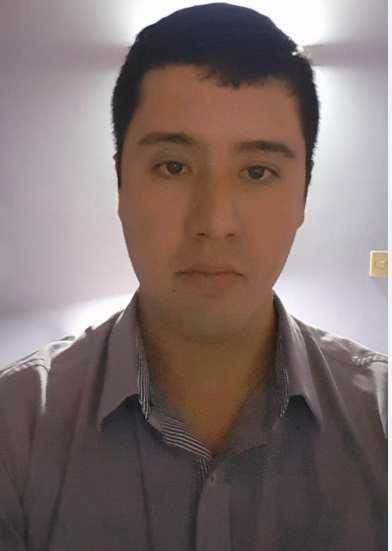

Rubén Dario Domínguez García
Email:
dominguezgruben772@gmail.com
Ciudad :San Lorenzo
Celular:(0983)778900
Linkedin
DATOS GENERALES
Fecha de Nacimiento: 25-04-1990
Cedula: 3.553.745
Nacionalidad: Paraguaya
Estado Civil: Soltero
FORMACIÓN ACADÉMICA
TERCIARIO: Tercer Año en la carrera de Lic. En Ciencias Infórmaticas.(FP-UNA)
EXPERIENCIA PROFESIONAL
(Octubre 2018 – Actualidad) I-Line S.A
Asunción, Paraguay
Desarrollador Genexus :
Desarrollo que forma parte del proyecto de la migracion del sistema, realizado en Inmobiliaria Raices, que se implementa en genexus 15 U12 con la herramienta de workflow integrada a GeneXus que permite modelar, automatizar, administrar y optimizar los procesos de negocios de la empresa para la creación de aplicaciones críticas en forma simple y eficaz junto con la herramienta Work With Plus y GAM
Plataforma :
>Base de datos PL/SQL en Oracle.
Desarrollador Genexus :
Desarrollo que forma parte del proyecto del sistema de Clubes,realizado en el Club Internacional de Tennis (CIT) que se desarrollaba en genexus 15 U12 junto con la herramienta Work With Plus y GAM
Desarrollador Genexus :
Desarrollo que forma parte del proyecto del sistema de Centro de Servicions, realizado en Banco BASA, que se implementa en genexus 15 U12 con la herramienta de workflow integrada a GeneXus que permite modelar los procesos de negocios del banco junto con la herramienta K2b. de aplicaciones críticas en forma simple y eficaz.
(7 meses) IDTKNOLOGY Innovación en TI.
Asunción, Paraguay
Desarrollador Genexus : Supervisión y migración de puestas en produccion de módulos/proyectos de Software.
Plataforma :
Genexus 7,5 U5.
Genexus 9.0
Genexus Evo 3 U 15.
(5 años) Vision Banco S.A.E.C.A
Asunción, Paraguay
Analista Soporte de Producción : Cuento con conocimientos de las siguientes herramientas
Genexus 9 U3, 9 U6, 9 U9.
Genexus Evo 1, Evo 2 y Evo 3.
AS/400 (Pantalla Verde).
C.A Manager (Service Desk).
Plataforma Jboss (Deployment).
Conocimientos Básico en WinSQL.
Encargado del Área Administrativas del Área de TIC (Tecnología de la Información y Comunicación).
Realización de Proyectos de Resolución.
Verificación de Contratos.
Verificación de Facturas.
Realización de estados de Presupuestos.
Servicio Técnico y ayuda en Línea a los funcionarios desarrollado en el área de Help-Desk.
Hardware: Realizar instalación de equipos informáticos (Pc’s, Monitores, Certificadoras, Impresoras).
>Realización de Planillas para el parque tecnológico del Banco.
>Realización de mudanza de equipos.
Software: Verificación de sistemas, instalación de programas.
Responsable del Monitoreo de UPS.
> En este cargo estuve dirigiendo un proyecto de mantenimiento de todas las CAC’s (Centro de Atencion al Cliente) que cuenta el banco.
Responsable de Equipos en el Área de Help-Desk.
>Verificación de equipos y configuraciones de los mismos.
>Conocimiento, configuración y manejo del sistema operativo Windows XP Profesional y Windows Seven.
Capacitador
Mostrar a los funcionarios en el uso de la herramienta IGDoc.
FORMACIÓN COMPLEMENTARIA
CONOCIMIENTOS INFORMÁTICA
Programación: JAVA
Frameworks : Netbeans.
S.O. : Windows XP y 7.
Ofimática : Microsoft Office
CURSOS CERTIFICADOS
Genexus:
*Curso Básico y Avanzado en Genexus EVO 2 – 60 horas
*Curso Básico y Avanzado en Genexus EVO 3 – 60 horas
Certificación de Analista Junior GeneXus Evolution 3.
Puntaje Examen: 100/100
*Certificación de Analista Junior GeneXus 16.
Puntaje Examen: 95/100
Se pueden visualizar en el siguiente enlace:
Training Genexus
Java Swing
*Curso de Programación Orientada a Objetos Java Swing – 100 horas
realizado en el “Servicio Nacional de Promoción Profesional”.
En el curso de Java Swing se realizan prácticas con la conexión a la
Base de Datos Postgres.
C.A Manager
*Curso en el uso de la herramienta C.A Manager Service Desk en Visión Banco S.A.E.C.A
Hacking Etical
*Curso Básico de Hacking Etical capacitado por el ING.Victor David Casares–24 horas.
CISCO
*CCNA1 Routing and Switching: Introducción a redes.
*CCNA2 Routing and Switching: Essentials.
*CCNA3 Routing and Switching: Escalamiento de redes.
*Introduccion a la Seguridad Cibernética.
CertiProf
*Scrum Foundation Professional Certificate (SFPC)
ID CP: CLVPDVRSSD-SSLGQHGQ-XHRTHMRRWP
*Remote Work and Virtual Collaboration Professional Certificate - RWVCPC
ID CP: 58201795
*Lifelong Learning
Kavacon
*Kavacon – Seminario Internacional de Ciberseguridad (2018,2019)
Visualizar Certificados
HOBBIES/PASATIEMPOS
Viajar
Lectura de Tutoriales
Ver Peliculas
REFERENCIAS
Lic. Hugo Gomez.
Vision Banco S.A.E.C.A (Asunción-Paraguay)
Cargo : Desarrollador Senior.
Teléfono : (0991) 214 432
Lic. Maria Cuenca.
Vision Banco S.A.E.C.A (Asunción-Paraguay)
Cargo : Desarrolladora Senior.
Teléfono : (0983) 219 489
Lic. Calos Da Rosa.
I.Line S.A. (Asunción-Paraguay)
Cargo : Desarrollador Senior.
Teléfono : (0981)114 731